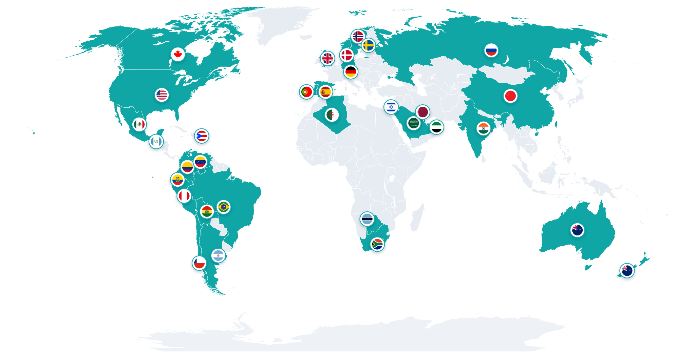

COMPARTICIÓN DE INFRAESTRUCTURA
Torres, fibra óptica y sitios para múltiples operadores.
- CAPEX optimizado
Menos inversión duplicada y despliegues más rápidos.
- Escala operativa
Capacidad para operadores, carriers y organismos.


Information Technology & Telecommunications
Contamos con tres unidades de negocio que pueden trabajar de manera especializada o integrarse bajo un mismo concepto de ciudad inteligente.
Torres, fibra óptica y capacidad de red para múltiples operadores.
Supervisión 24/7 y respuesta técnica preventiva y correctiva.
Conectividad de Internet y televisión por fibra para hogares y empresas.
Plataformas para seguimiento, control, eficiencia productiva y anticipación de desvíos.
Plataformas ITS y Smart City para movilidad, iluminación, analítica y gestión urbana.
Sensores, dispositivos y datos conectados para automatizar y optimizar operaciones.
Ejecutamos obras integrales de fibra óptica y energía, con canalizaciones y tendidos preparados para escalar. Construimos torres reticuladas, monopostes y estructuras arriostradas, además de soluciones críticas para radiofrecuencia, telefonía móvil, datacenters, racks y tableros eléctricos.
Brindamos mantenimiento preventivo y correctivo con cuadrillas de campo, trazabilidad de cada intervención y tecnología aplicada al control predictivo de la operación.
Torres, fibra óptica y sitios para múltiples operadores.
Menos inversión duplicada y despliegues más rápidos.
Capacidad para operadores, carriers y organismos.


Obra, infraestructura y tecnología conectadas
de punta a punta.

Continuidad operativa para infraestructura crítica.
Tecnología y experiencia internacional para
desarrollar y operar ciudades inteligentes.
EXPERIENCIA SICE EN EL MUNDO

La Matanza · Tandil · Trenes Argentinos · Ciudad de Buenos Aires · Buenos Aires

Una red de proyectos que conecta corredores, ciudades y hogares en distintos puntos del país.
Fibra óptica y torres desplegadas sobre autopistas y corredores de alta demanda.
INFRAESTRUCTURA · COBERTURA · OPERACIÓN
Fibra óptica operativa y torres críticas desplegadas para sostener la conectividad urbana.
+300 KM DE FIBRA · 73 TORRES
Infraestructura de fibra óptica y torres para ampliar la cobertura sobre corredores provinciales.
+100 KM DE FIBRA · 41 TORRESRedes neutrales para Internet y TV, diseñadas para brindar cobertura local y operación permanente.
RED NEUTRAL · OPERACIÓN LOCAL · CONECTIVIDAD
Cobertura de red neutral para Internet y TV en todo Tandil.

Cobertura y operación de red neutral para Internet y TV en La Matanza.
GRUPO ITTEL
Information Technology & Telecommunications
LÍDERES EN ARGENTINA EN EL DESARROLLO, OPERACIÓN E INTEGRACIÓN DE INFRAESTRUCTURA IT & TELCO A GRAN ESCALA.
Líderes en Argentina en el desarrollo, operación e integración de infraestructura IT & TELCO a gran escala.
Desarrollo y compartición de infraestructura propia (Torres y Fibra Oscura) optimizando el CAPEX de múltiples operadores.
Gestión proactiva de redes con NOC 24/7 y cuadrillas de respuesta rápida en campo.
Operadores de Internet y TV por fibra (FTTH) a través de las marcas USITTEL y LARANET.
Ejecución de obras civiles, despliegue tecnológico en empresas y tendidos de fibra óptica.
Monitoreo tecnológico de operaciones de campo
Soluciones On Demand
SICE PARTNERS
Desarrollo y compartición de infraestructura propia (Torres y Fibra Oscura)


Soluciones integrales de infraestructura para redes de alta exigencia.


Despliegue de red FTTH con arquitectura GPON para Internet e IPTV de alta calidad en Tandil, operado comercialmente bajo la marca USITTEL con cobertura urbana y periurbana en expansión.


Diseño e implementación de red óptica pasiva FTTH en La Matanza, con arquitectura escalable, backbone redundante y operación 24/7 bajo la marca comercial LARANET.

CAPACIDAD REGIONAL.
LA MATANZA
NODO FO CENTRALIZADO
TANDIL
MANZANAS FTTH ACTUALMENTE
+300 km de Fibra Óptica operativa y 73 Torres críticas desplegadas para maximizar la conectividad en la zona de mayor demanda del país.
+100 km de Fibra Óptica con 41 Torres estratégicas, mejorando la densidad y demanda de conectividad en el territorio provincial.
CAPACIDAD DE RED.
KM DE FIBRA ÓPTICA
DESPLEGADOS A NIVEL NACIONAL
TORRES TELCO
EN OPERACIÓN A NIVEL NACIONAL
Integra Torres, Fibra Óptica y Valor Agregado para el beneficio de toda la red.
Despliegues integrales de Fibra Óptica y Torres para TODOS los Operadores Móviles de Argentina a todo nivel jurisdiccional.
Control objetivo, trazable y en tiempo real de servicios en la vía pública.
Visualización de incidencias y tareas sobre mapa con ubicación exacta y seguimiento en tiempo real.
Registro de auditorías, evidencias, estados y responsables con historial completo de cada acción.
Asignación de tareas, control de cuadrillas e indicadores para una operación más eficiente.

Integramos la experiencia operativa de Grupo iTTel con soluciones SICE orientadas a ITS, movilidad, túneles, peaje, seguridad, centros de control y servicios urbanos inteligentes.
Una propuesta pensada para llevar el control de campo, la trazabilidad operativa y la analítica de datos hacia entornos de infraestructura crítica.
PROYECTOS DESTACADOS de SICE


Dragados
ACS
Dragados
Bouygues
Queiroz Galvão
Madrid
Calle 30
Via Expresso
Ayalon Highways
Transport for NSW
CPB Contractors
Sotra Link
Trafikverket
Femern
Waterview Connection
Además de su experiencia en ITS, túneles y movilidad, SICE aporta plataformas capaces de integrar operación, datos y supervisión en tiempo real, combinando tableros de control, georreferenciación, analítica avanzada y herramientas de inteligencia aplicada.
Esta capa tecnológica permite consolidar información operativa, detectar patrones, generar indicadores, visualizar eventos sobre mapa y mejorar la toma de decisiones con una visión unificada del servicio.

Homologados por SICE Tecnología y Sistemas para Argentina.
NÚMEROS QUE NOS RESPALDAN.
AÑOS DE EXPERIENCIA
PROYECTOS DE ÉXITO
DE SLA GARANTIZADO
Operadores, concesionarios y organismos que confían en nuestra infraestructura.


Consultas comerciales, técnicas o institucionales.
0810-345-ITTEL (4883)


 Canadá
Canadá USA
USA Perú
Perú España
España Portugal
Portugal Israel
Israel Australia
Australia Noruega
Noruega Suecia
Suecia Dinamarca
Dinamarca Nueva Zelanda
Nueva Zelanda